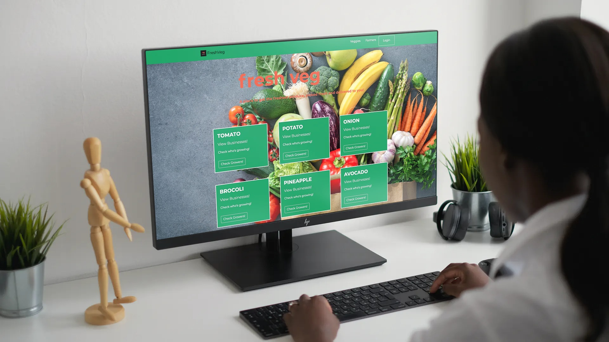

Fresh Veg
At about a 3rd of the way through bootcamp, we started our 2nd assignment. I was grouped with three other aspiring developers who I will link below so definetely go and check out what they've been up to!
We started with an idea. Fresh Veg is designed to help restuarants, cafes and other businesses within the hospitality industry get their fresh produce direct from farmers around their area. This idea not only cuts out the middle-man, bringing down the exuberant costs of fresh produce from 3rd party suppliers, but it also drastically increases the possible profitability for local farmers! Who are just trying to make an honest dollar.
This project started with the creation of the database. We used
MySQL. Once we had a database in place we developed a quick and easy Node app used to do
database manipulation for our purposes as well as being an option in future development
for the farmers to use to update their produce if they are looking for a more affordable option.
Before we used the node app to populate the database we had to host it on Heroku.
Once the database was created and populated and the Heroku hosting was done we got to writing out
our Sequelize control of the database and the basics to our routing to get it all ready to render.
After getting those parts under control we moved onto building out our express-handlebars templates and started getting data rendered through to the client. Once we successfully got all of these parts done we done some light styling and then got started on our presentation.
